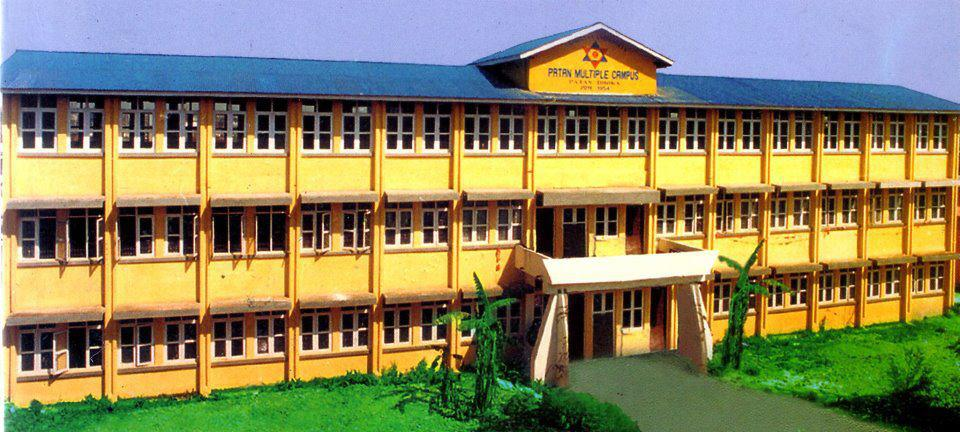

Patan Multiple Campus is T.U’s single component campus in Lalitpur district, the valley’s second biggest city. It was formally established on 17th Bhadra, 2011 B.S. and was titled “Patan Inter College” at the time. On Bhadra 31, 2021 BS, His Majesty Mahendra Bir Bikram Shah, the then crown prince, opened the college.

Patan Multiple Campus is the only constituent campus of T.U in Lalitpur district, the second largest city in the valley. It was formally founded on 17th Bhadra, 2011 B.S, and it was then named as "Patan Inter College". The college was inaugurated by the then crown prince His Majesty Mahendra Bir Bikram Shah on Bhadra 31, 2021 BS.
Several educationists had tirelessly worked for the establishment of the college in Lalitpur district. They include: Prof. Mangal Raj Joshi, Prof. Asharam Shakya, Mr. Kamal Mani Dixit, Prof. Hem Raj Joshi, Mr. Indra Raj Mishra, Mr. Pradhumna Lal Joshi, Mr. Bhairab Bahadur Pradhan, Mr. Raj Bahadur Chipalu, and Laxmi Prasad Rima.
Patan Multiple Campus is one of the most popular constitutent campus of Tribhuvan University. It occupied about 27,296 sq m area. The campus is situated at Patan Dhoka, Lalitpur of Nepal which is also known as city of Newar community.
Patan Multiple campus is a constituent campus of Tribhuvan University, it offers both Bachelors and Masters program in the faculties of Humanities and social sciences, Faculty of Management and Faculty of Science.
This campus conducts several programs such as general science, environment science, masters, different ARTS faculty and Bs.CSIT .